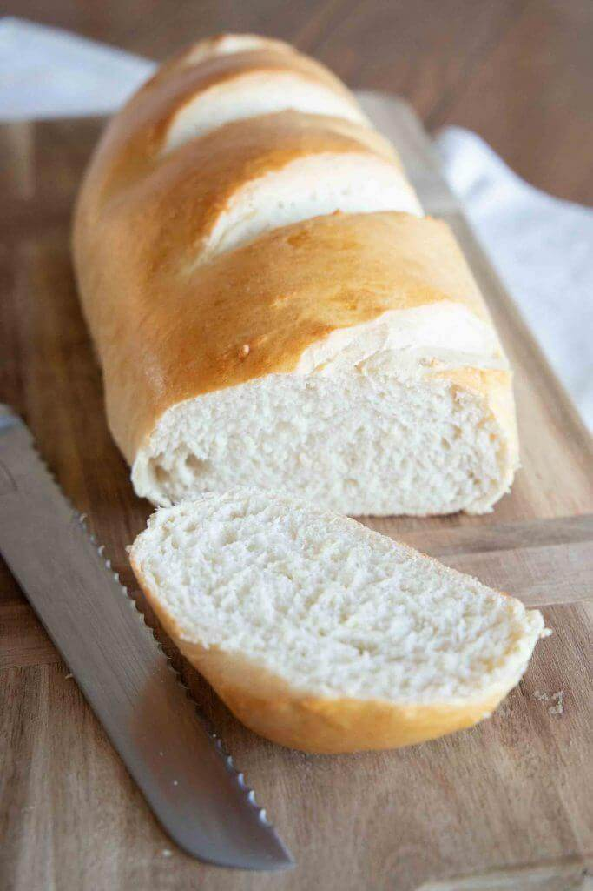

Learn how to make Perfect Homemade French Bread. It only requires a handful of ingredients to make perfect bakery style bread at home!

Ingredients
1 1/2 tablespoons instant dry yeast
2 cups warm water
1 1/2 teaspoons salt
4 1/2 to 5 cups all-purpose flour
1 large egg beaten
Instructions
In the bowl of a stand mixer, add 1 1/2 tablespoons instant dry yeast, 2 cups warm water, 1 1/2 teaspoons salt, and about 4 to 4 1/2 cups of flour. Knead on a slow speed until the flour has started to combine. Increase speed to medium and gradually add in remaining flour, just until dough pulls away from the sides of the bowl. The exact amount of flour you need varies based on a variety of factors. You should have a soft pliable dough that is tacky, but not sticky to the touch.
Transfer to a lightly greased mixing bowl, cover with a towel, and let rise until double in size, about 1 hour.
Divide dough in half. Roll each half into a large rectangle. Roll up tightly from the long end. Place onto a lightly greased baking sheet or into a French bread pan. Cover and let rise 30 to 45 minutes.
Meanwhile, preheat oven to 375 degrees and use a fork or whisk to beat 1 large egg in a small bowl.
Use a sharp knife to cut diagonal slashes on the top of each bread loaf, about 1/4 inch deep. Brush loaves with beaten egg.
Bake in preheated oven for 35-40 minutes, until golden brown. Remove from the oven and cool on a wire rack before serving.
Due to the fact that there are not any chemicals or preservatives in homemade bread, it does not last more than a few days before going stale.
The secret to keeping bread fresh is to have a little bit of airflow in whatever container you choose. Old school bread boxes are great for this, as well a linen or cotton bread bags or towels to wrap in.